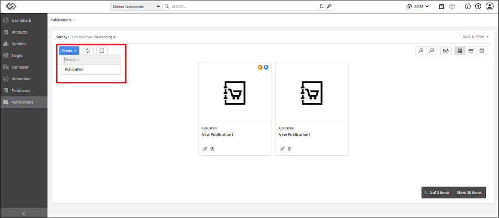

Creating a Publication
Publication is sort of magazine, catalog, brochure, or flyer that is used for the marketing of your products.
The planner will plan how a publication should appear using the Whiteboard of the PXP Application.
Publication is created from the publication template.
| Purpose: |
- The purpose of this document is to show you how to create and plan publications in Contentserv PXP application.
You will be guided through different stages that are involved in the planning of a new publication.
|
| Target Audience: |
|
| Key Terms |
- Whiteboard: Whiteboard
is a feature in the Contentserv system, which is similar to Adobe © InDesign © application.
There are two types of target audiences who will be involved in the publications.
One is a planner who will actually plan the publication.
The other one is a designer who will make the layout and will prepare the templates using Adobe © InDesign © software.
Desktop Publisher will help the planner to plan how a publication should look like.
- Slot: the Slot is a place in a
document template
where a product is placed while planning the document template in Whiteboard. A planner will split the defined
Workable Area
of a document template into N number of rows and columns according to his need in Whiteboard. Thus, he will create a slot,
which is a separate space for each product. Now, a planner can place products into separate slots, where one slot will contain a single product.
|
How-to: Create Publications
- Log into the application and select the option MxM from the drop-down located in the header panel.

- Click on Publications from the left side vertical panel.
- You will see all created publications on this screen.
- Click on the Create icon and select Publication from the drop-down to create a new publication.

- You will be redirected to a window where you can select a publication template and click on Create button.
- You will see a new publication is created. You can define Classes and Taxonomies from the Overview tab.
- You can define properties from the Properties tab.
- You can see publication template, document templates, and product templates associated with the publication from Relationships tab.